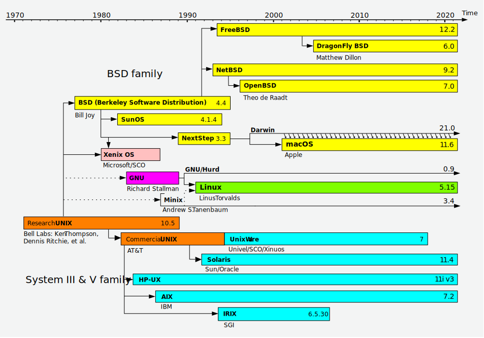
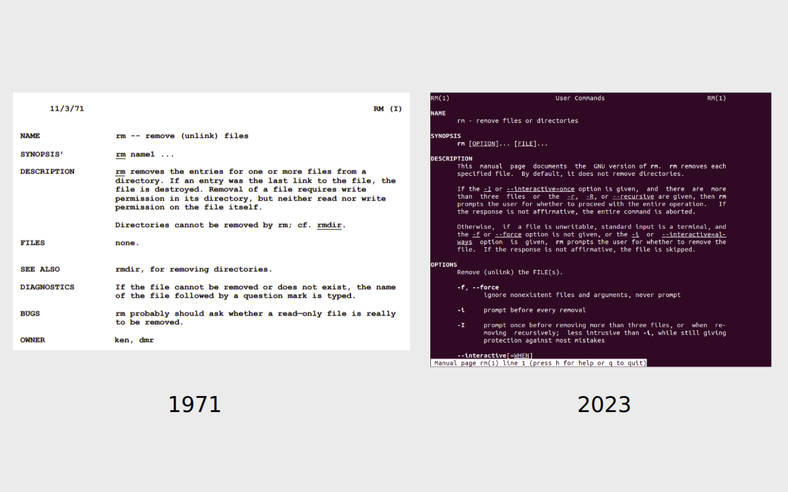
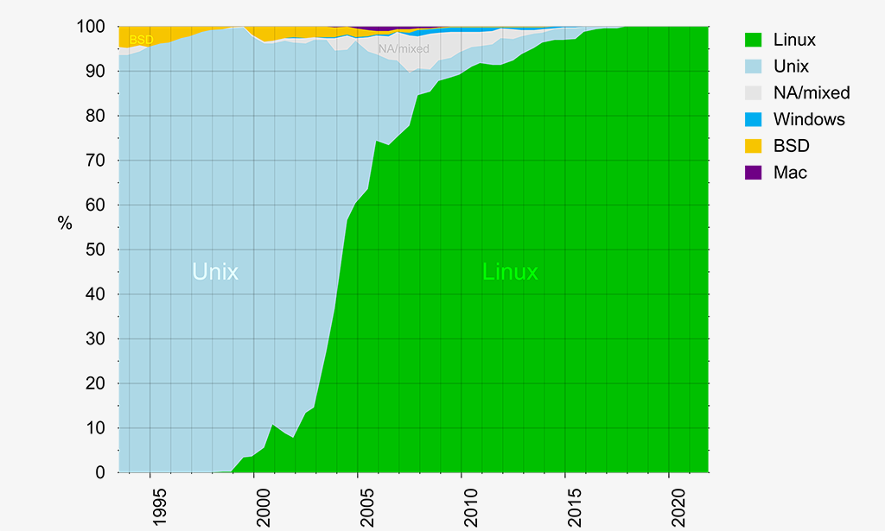

OS
Unixista BSD:n kautta GNU/Linuxiin
Unix on eräänlainen Linuxin esi-isä, joka oli olemassa jo keskustietokoneiden (engl. mainframe) aikakaudella, kauan ennen kotikoneen (engl. PC, personal computer) yleistymistä.

Kuvio 1: Unix-like järjestelmien aikajana. Kuva lainattu Wikipediasta.
AT&T:n UNIX
AT&T Bell Labs'n UNIX-käyttöliittymän lähdekoodi oli saatavilla Unixin alkuaikoina, mikä mahdollisti tutkijoiden lisätä siihen toiminnallisuuksia, ja näin Berkeleyn yliopiston tutkijat tekivätkin. Tämä lisämausteilla varustettu käyttöjärjestelmä kasvoi omaksi yliopistojen käyttämäksi Berkeley Software Distributioniksi (BSD). Unix:n koodi oli kuitenkin AT&T:n omaisuutta, joten yliopistojen oli pakko maksaa lisenssinmukaisia maksuja AT&T:lle. Ongelma ratkaistiin korvaamalla UNIX-kernel BSD-kernelillä, joka oli AT&T:n kernelin kaltainen, mutta ilman AT&T:n omistusoikeutta — eli siis klooni. BSD:n kaupalliseksi versioksi tarkoitettua BSDI:tä alettiin myydä 99 % alennuksella (verrattuna System V Unixiin.) Tästä seurasi oikeusjuttu, jossa AT&T syytti BSDI:tä UNIXin lähdekoodin varastamisesta. Oikeusjutun aikana BSD:n kohtalo oli epävarmalla pohjalla, mikä tarjosi hyvän kasvualustan uusille käyttöjärjestelmille, joilla ei ollut suoraa UNIX-taakkaa.

Kuvio 2: Ote UNIX Programmer Manualista (man13.pdf) sekä Ubuntu 22.04 man rm
Linux kernel
Linus Torvalds kirjoitti kernelin, jonka tarkoitus oli olla UNIX:n kaltainen, mutta ilmainen käyttöjärjestelmä. Sen esikuvana toimi Andrew Tanenbaumin MINIX-käyttöjärjestelmä, jonka Tanenbaum kirjoitti akateemisiin tarkoituksiin. Torvalds opiskeli tuolloin Helsingin yliopistossa, ja hän kirjoitti kernelin opiskeluprojektina. Torvalds kirjoitti kernelin aluksi Intel 386-prosessorille, joka oli tuolloin yleinen PC-koneissa ("AT-kloonikoneissa"). Kernel on pääosin C-kieltä ja Assemblyä ja se käännettiin GNU GCC:llä.
Linus Torvalds, 1991, Usenet group comp.os.minix
I'm doing a (free) operating system (just a hobby, won't be big and professional like gnu) for 386(486) AT clones. This has been brewing since april, and is starting to get ready. I'd like any feedback on things people like/dislike in minix, as my OS resembles it somewhat (same physical layout of the file-system (due to practical reasons) among other things).
I've currently ported bash(1.08) and gcc(1.40), and things seem to work. This implies that I'll get something practical within a few months, and I'd like to know what features most people would want. Any suggestions are welcome, but I won't promise I'll implement them :-)
Linus Torvalds ja Andrew Tanenbaum suosivat erilaisia arkkitehtuurisia ratkaisuja. Linus suosi monoliittistä kerneliä, Tanenbaum mikrokerneliä. Jos tähän liittyvä debaatti kiinnostaa, voit tutustua esimerkiksi Linus Torvaldsin elämänkerran Just for Fun kautta, jonka todennäköisesti löydät netistä tai kirjastosta ilmaiseksi. Tanenbaumin näkemykseen voi tutustua esimerkiksi Vrije Universiteit: Andrew S. Tanenbaum's Home Page-saitin kautta, kuten kirjoitukseen Tanenbaum-Torvalds Debate Part II. Myös wikipedian artikkelin kautta löytyy linkkejä lähteisiin: Tanenbaum–Torvalds debate.
GNU/Linux
GNU sen sijaan on Richard Stallmanin perustama projekti, joka pyrki luomaan UNIX-tyylisen käyttöjärjestelmän, joka olisi täysin vapaa. GNU:n Hurd-kernel ei ottanut tuulta alleen, mutta GNU-työkalut olivat jo valmiita, joten Torvalds päätti käyttää niitä. Näin Linux syntyi GNU/Linuxiksi.
The kernel is an essential part of an operating system, but useless by itself; it can only function in the context of a complete operating system. Linux is normally used in combination with the GNU operating system: the whole system is basically GNU with Linux added, or GNU/Linux. All the so-called “Linux” distributions are really distributions of GNU/Linux. - Richard Stallman, Linux and the GNU System
Linuxin komponentit
Linux-ytimen päälle rakennetun käyttöjärjestelmän voidaan nähdä koostuvan useasta kerroksesta. Monenlaiset jaottelut tai granulariteetit ovat mahdollisia. Alla on esitelty yksi mahdollinen jako, jossa GNU-sovellukset esitellään omana kerroksenaan:
- Linux kernel
- GNU utilities
- Shell (Graafinen tai tekstipohjainen)
- Ohjelmat (eng. application software)
Graafisen käyttöliittymän komponentit
Graafinen käyttöliittymä ei ole pakollinen osa Linux-jakelua ja usein Linuxia ajetaankin palvelinympäristössä ilman näitä raskaita komponentteja. Käytämme tällä kurssilla Ubuntu Desktop -asennusta, joka hyödyntää vakiona graafista shelliä, joten meidän on syytä tutustua hieman graafisen ympäristön komponentteihin.
flowchart TD
DE[Desktop Environment]
DM[Display Manager]
WM[Window Manager or Compositor]
DS[Display Server or Compositor]
K[Kernel]
DE <--> DM <--> DS
DE o--o WM <--> DS
DS <--> K
Kuvio 3: Graafiseen käyttöliittymään tyypillisesti liittyvät komponentit. Työpöytäympärstön ja ikkunointiohjelman välillä on erilainen nuoli, koska ne voivat olla toisistaan riippumattomia tai hyvinkin toisiinsa integroituja.
- Desktop Environment (suom. työpöytäympäristö)
- GNOME, KDE, Xfce, Cinammon ja monet muut.
- Käyttöliittymä, joka sisältää ikonit, paneelit, widgetit, taustakuvat ynnä muut.
- Se UI/UX-kokonaisuus, jota käytät tyypillisimmin.
- Window Manager (suom. ikkunointiohjelma, näytönjärjestin)
- Hallinnoi ikkunoiden sijaintia ruudulla.
- Mutter (for GNOME Shell), i3, Hyprland, Sway, jne.
- Osa työpöytäympäristöä tai itsenäinen ohjelma.
- Waylandin kohdalla tämä on osa Compositoria.
- Display Manager (suom. näytönhallintaohjelma)
- GNOME Display Manager (GDM), SDDM, jne.
- Graafinen kirjautumisnäyttö. Näet tämän päivittäin.
- Hallitsee sessioiden käynnistämistä ja lopettamista.
- Display Server (suom. näytönhallintajärjestelmä)
- Järjestelmät: X, Wayland tai Mir.
- Protokollat: X11, Wayland, Mir.
- Waylandin kohdalla tämä on osa Compositoria.
- Kernel (suom. ydin)
- Ydin esitellään ensi luvussa.
- Hiiri ja näppäimistö keskustelevat kernelin kautta Display Serverin kanssa.
Yllä oleva listaus pyrkii olemaan jossain määrin pätevä, vaikka X ja Wayland toimivat eri tavoin. Waylandissä sekä Display Server että Window Manager ovat Compositor. X:ssä Compositor on irrallinen ohjelma, joka puuttuu yllä olevasta graafista ja listauksesta. Tärkeää on kuitenkin muistaa, että Linuxin työpöytäympäristö ei ole yksittäinen ohjelma vaan useista komponenteista koostuva kokonaisuus, jotka ovat jossain määrin vaihdettavissa, jossain määrin toisiinsa integroituja. Jos X:n ja Waylandin ero kiinnostaa, lue Waylandin sivuilta Wayland Architecture. Kyseisessä artikkelissa kuvataan yksittäisen syöttölaitteen (esim. näppäimistön) eventin (esim. painallus) kulkua Kernelistä näytölle X:n ja Waylandin kohdalla.
Tip
Linux ei ole ehkä yleisin työpöytäkäyttöjärjestelmä, mutta se on huomattavan yleinen palvelimissa, sulautetuissa järjestelmissä ja mobiililaitteissa, pilvialustojen taustalla sekä supertietokoneissa. Tällä kurssilla Linuxia käytetään graafisena käyttöjärjestelmänä, jotta siihen voi tutustua täysin läpikotaisesti - sinun ei tarvitse ajaa esimerkiksi Visual Studio Codea jossain muualla ja tyytyä käyttämään Linuxia kontissa/virtuaalikoneessa. Kenties voit korvata opiskelukäytössä Windowsin kokonaan Linuxilla?
WSL komponentit
WSL eli Windows Subsystem for Linux on Windowsin komponentti, joka mahdollistaa Linuxin ajamisen Windowsissa.
Käytämme tällä kurssilla mieluiten suoraan raudan päälle asennettua Linuxia, jotta vältymme ylimääräiseltä monimutkaisuudelta, jonka eri käyttöjärjestelmien yhteispeli luo. Tulevaisuuden kannalta on hyvä tietää, että Linuxia voi ajaa myös Windowsista käsin. Kenties haluat tämän kurssin jälkeen siirtyä hybridimalliin, jossa Windows on pääkäyttöjärjestelmäsi, mutta suoritat ohjelmistonkehityksen Linuxissa... jolle Windows on GUI!
Koska tämä on tämän kurssin suhteen tulevaisuusasiaa, niin loppu teksti on admonition-infolaatikossa alla:
WSL
Kun luet tätä infolaatikkoa, on suositeltavaa avata arkkitehtuurikuvaajat auki selventämään tilannetta. Kirjoitushetkellä kenties parhaat kuvaajat ovat:
Windows Subsystem for Linux (WSL) on Windowsin komponentti, joka mahdollistaa Linux-virtuaalikoneen ajamisen Windowsin rinnalla hyvinkin lähellä rautaa. Jos sinulla on Windowsissa Docker Desktop asennettuna, sinulla on jo mitä varmemmin WSL 2.0 asennettuna ja sinulta löytyy jakelu nimeltään docker-desktop. Windowsissa ajettavat Linux-kontit ajetaan siis virtuaalikoneessa, toisin kuin tällä kurssilla esitellyt Linuxissa natiivisti ajettavat kontitetut prosessit (esim. Dockerin avulla).
Koska tämä on Linux-kurssi, on aiheellista pohtia, mitä WSL:n konepellin alla oikeastaan tapahtuu. Kaiken pohjalla on Microsoftin Virtual Machine Platform, joka pyörittää Microsoft Linux kerneliä. Kutakin asennettua jakelua varten ei asenneta uutta virtuaalikonetta, vaan eri virtuaalikoneet hyödyntävät samaa kerneliä. Windowsin päässä suoritetaan keskeisenä palveluna WslService, joka hallinnoi istuntoja. Näitä jakeluita voivat olla esimerkiksi::
- Käyttäjän asentamat distrot:
- esim. Storesta asennettu Ubuntu
- esim. PowerShellistä asennettu Fedora
- esim. Docker Desktopin asentama Ubuntu (nimeltään
docker-desktop)
- Näkymätön servicetaso:
- WSLg (CBL Mariner Linux)
Microsoft CBL-Mariner Linux on Azuresta tuttu jakelu, jossa ajetaan tässä tapauksessa Wayland- ja PulseAudio-servereitä. Tämä mahdollistaa graafisten Linux-sovellusten ajamisen Windows-näkymästä käsin. On siis täysin mahdollista ajaa Ubuntu for Windows:ssa komento sudo apt install nautilus ja avata jatkossa Nautilus Windowsin Windowsin aloitusvalikosta. Nautilus on GNOME-työpöytäympäristön tiedostonhallintaohjelma, mikä tulee sinulle tutuksi kurssin aikana – eli siis Ubuntussa tavallinen tiedostonhallintaohjelma, jolla navigoit hakemistoissa ja avaat tiedostoja.
Myös tiedostopääsy toimii ristiin:
- Windowsista käsin Linux-tiedostot näkyvät osoitteessa
\\wsl$\(esim.\\wsl$\docker-desktop\home\user\) ja voit käyttää niitä Windowsin tiedostonhallinnassa. - Linuxista käsin Windows-tiedostot näkyvät
/mnt/c/-hakemistossa (esim./mnt/c/Users/user/Documents/).
Tästä tiedostojen ristiin toiminnasta vastaa Plan 9 -serveri Linuxin puolella. Mikäli kirjoitat Linuxista tiedostoja /mnt/c/-hakemistoon, ne näkyvät Windowsin puolella C:\-hakemistossa. Kirjoitus- ja lukuoperaatiot käyttävät 9P-protokollaa, mikä luonnollisesti hidastaa tiedostojen käsittelyä verrattuna natiiviin pääsyyn.
Tämän infolaatikon lukemisen jälkeen sinulla on toivottavasti ajatus, että Linuxia opetellessa tämä kahden järjestelmän rinnakkaiselo on monimutkainen lisä, jonka vuoksi on suositeltavaa käyttää Linuxia natiivisti ainakin aluksi. Kun Linuxin perusteet ovat hallussa, valitse sinulle jatkossa sopivin työskentelytapa.
Linux ja distribuutiot tänään
Linux on nykyään yksi maailman suosituimmista käyttöjärjestelmistä — ellei suosituin. Se on tyypillinen käyttöjärjestelmä palvelimissa, mobiililaitteissa ja monissa sulautetuissa järjestelmissä. Tyypillisesti asennat Linuxin (tai GNU/Linuxin) käyttäen jotakin distribuution asennusohjelmaa, joka kopioidaan asennusmediaan (esim. USB-tikku tai CD-ROM). Jos mobiililaitteet (Android) unohdetaan, niin suurimmat pelurit Linuxin distribuutioiden markkinoilla ovat Debian ja Red Hat. Näitä sanotaan perheiksi, joihin kuuluu useita jakeluita, jotka perustuvat yhteiseen alkuperäiseen jakeluun (eli "yhteinen upstream").
- Debian
- Debian on itsenäinen Linux-jakelu ja Debian-perheeseen kuuluu Canonicalin Ubuntu ja sen perilliset (Linux Mint, Zorin OS, Pop!_OS jne.)
- Red Hat
- Red Hat -perheeseen kuuluu itsenäinen jakelu Fedora ja sen perilliset sekä perillisten perilliset (RHEL, CentOS Stream, Rocky jne.)
Tip
Red Hat Enterprise Linux (RHEL) on maksullinen, mutta jos haluat tutustua siihen, saat ilmaisen lisenssin Red Hat Developer -sivustolta ei-kaupalliseen käyttöön. Mikäli tämä kiinnostaa, voit käytä myös Red Hat Academyn kursseja. Ota yhteys opettajaan: hän voi avata sinulle pääsyn näihin kursseihin.
Muitakin itsenäisiä jakeluita löytyy, kuten Slackware, Gentoo, Arch Linux, openSUSE. Tutustu näihin joko heidän omilla sivuillaan tai DistroWatch-sivustolla. Työelämässä käytät suurella todennäköisyydellä joko Red Hat -perheen tai Debian-perheen jakelua. Näihin voit tutustua esimerkiksi asentamalla CentOS Stream:n ja Ubuntun virtuaalikoneisiin - kuten tällä kurssilla tehdään. Huomaa, että edes DistroWatch ei sisällä kaikkia olemassa olevia jakeluita, koska niiden lisääminen sivuilla on vapaaehtoista. Esimerkiksi Opinsys Oy:n jakelu Puavo OS puuttuu kirjoitushetkellä DistroWatchista. Puavo OS on Debian-pohjainen jakelu, joka on kehitetty erityisesti koulumaailman tarpeisiin. Tutustu ihmeessä heidän verkkosivuihin.
Quote
More than 60 percent of customer cores in Azure run Linux workloads. Choose from popular Linux distributions including Red Hat, SUSE, Ubuntu, CentOS, Debian, and CoreOS. - Microsoft Azure
Konttien ja Dockerin myötä Linux on yleistynyt myös ohjelmistonkehittäjien Windows ja macOS työasemissa. Tällöin kehittäjillä on Windows/mac-työasema, jossa pyörii Linux-virtuaalikone, jossa pyörii Docker-kontteja. Docker siis käytännössä vaatii Linuxin - joko ihan oikean asennuksen tai esimerkiksi WSL:n (Windows Subsystem for Linux). Huomaathan, että Docker ei kuitenkaan ole ainut peluri konttien maailmassa, vaan esimerkiksi Podman on Dockerin vaihtoehto. Tämä on yleisempi Red Hat -perheen jakeluissa.

Kuvio 3: Linuxin käyttö supertietokoneissa. (By Benedikt.Seidl - Eigenes Werk (own work) / source top500.org, Public Domain, https://commons.wikimedia.org/w/index.php?curid=5932978).
Tehtävät
Tehtävä: Käyttöjärjestelmän tarve
Selvitä, mihin käyttöjärjestelmää ylipäätänsä tarvitaan. Onko se välttämätön osa tietokonetta? Olisiko tietokone nopeampi vai hitaampi ilman käyttöjärjestelmää? Mitä käyttöjärjestelmä tuo tietokoneelle tai sen käyttäjälle, jota ei ilman sitä voisi saavuttaa? Oliko esimerkiksi 8-bittisessä NES:ssä (Nintendo Entertainment System) käyttöjärjestelmää?
Tehtävä: Graafinen käyttöliittymä
Tutustu asentamasi Linux-distribuution graafiseen käyttöliittymään. Mitä näytönhallintajärjestelmää se käyttää? Mitä työpöytäympäristöä (tai ikkunointijärjestelmän)? Vastauksia löydät distribuution omilta sivuilta tai esimerkiksi DistroWatch-sivustolta, mutta kokeile myös, löytyyko vastaus Terminaalin avulla. Terminaalin käyttö neuvotaan vasta myöhemmin, mutta voit kokeilla jo nyt ajaa löytämiäsi komentoja.
Tehtävä: Wayland vs X11
Wayland on korvaamassa/korvannut X11:n. Tutustu Waylandiin ja sen eroihin X11:een esimerkiksi lukemalla artikkelin Wayland Architecture. Miksi Wayland on kehitetty? Mitä eroja Waylandilla on X11:een verrattuna?
Tehtävä: Suositellut jakelut
Tällä kurssilla suositellaan Ubuntu-jakelua (eng. distribution). Etsi internetistä suositeltujen distribuutioiden listoja - erityisesti aloittelijoille, mutta miksei myös eri käyttöihin. Mitä distribuutioita löydät listoilta?
Tehtävä: LTS-lyhenne
Ubuntun version 24.04 yhteydessä esiintyy LTS-lyhenne. Mitä LTS tarkoittaa?